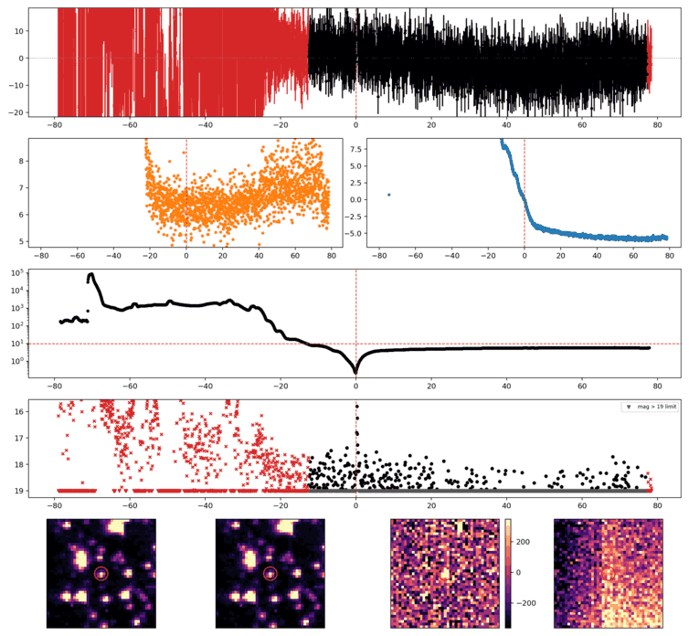
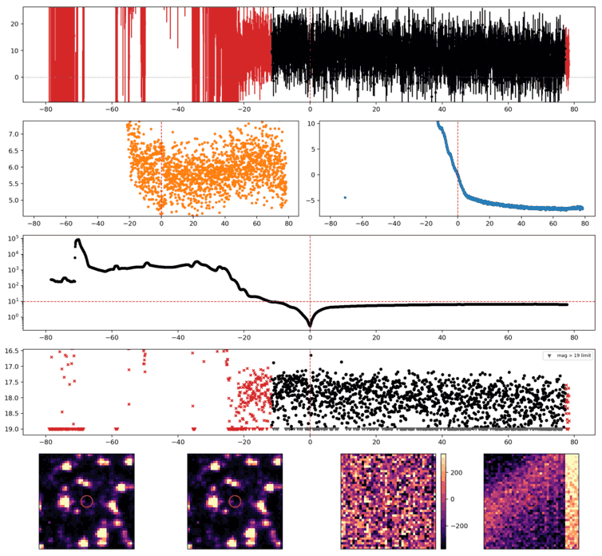
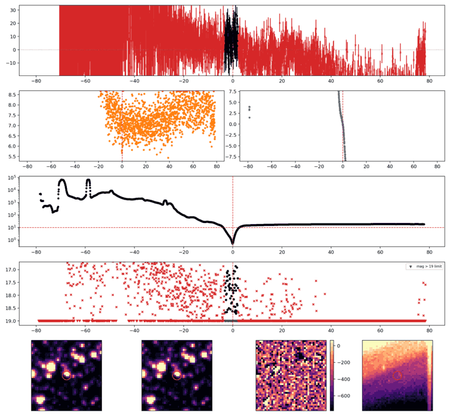
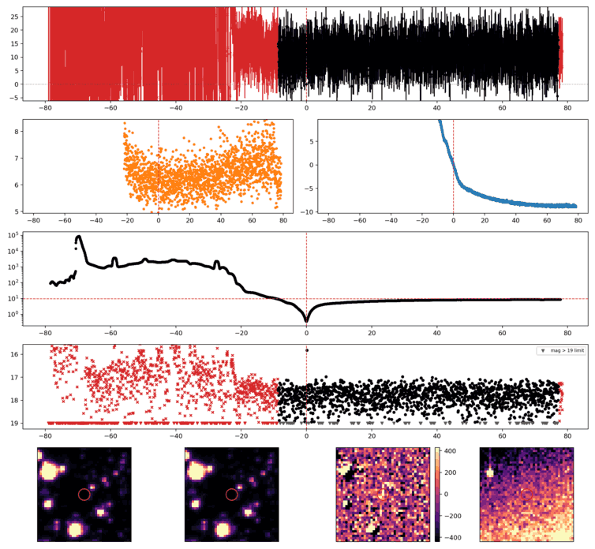
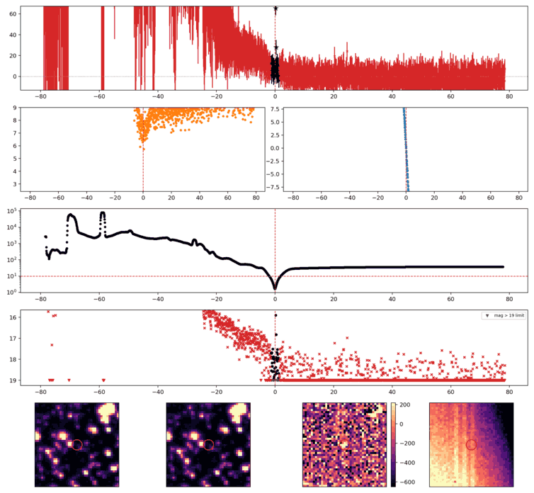
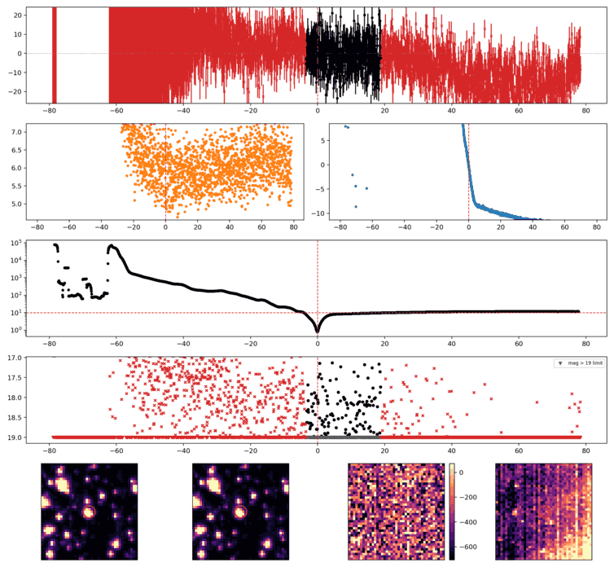
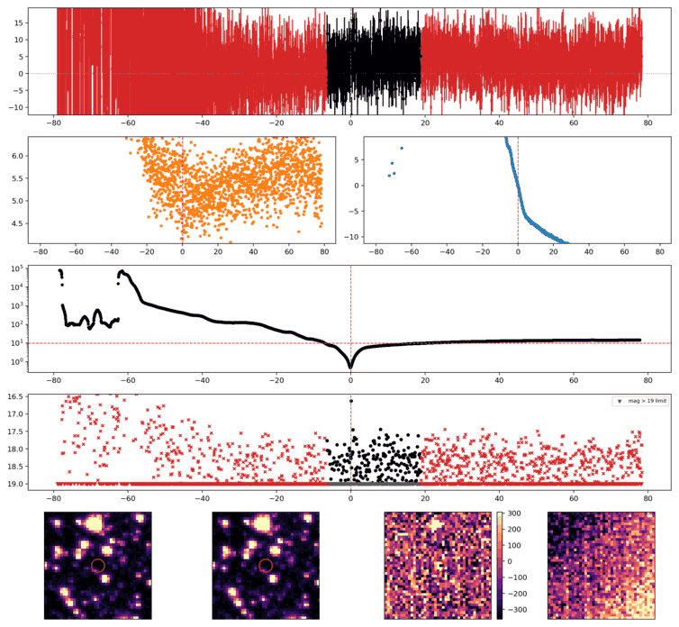
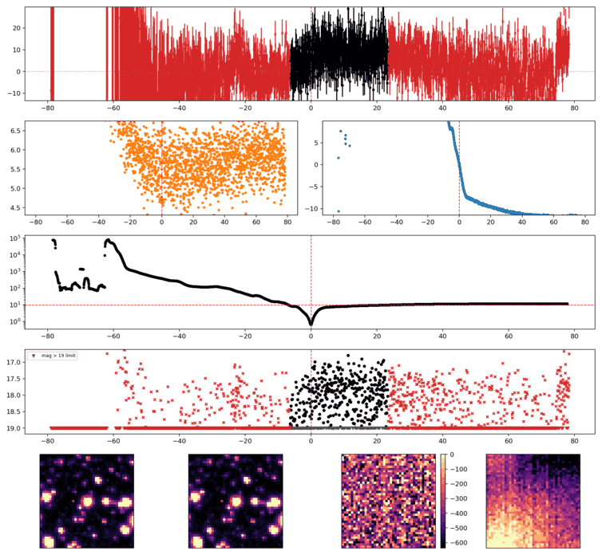
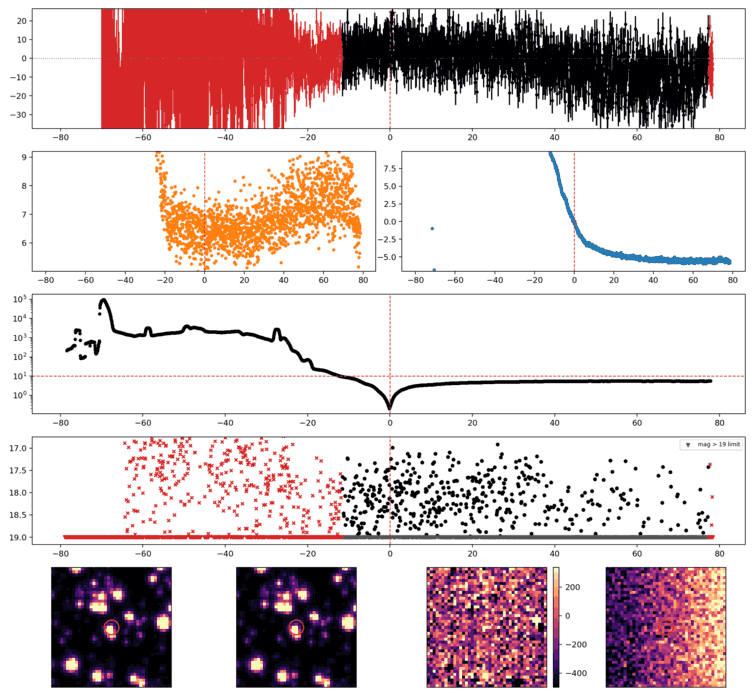

Search centered on refined position (326.5288376, -40.8927682 deg). Gaia coordinates are at J2016.0; proper motions are shown, without epoch propagation. A positional match does not change the candidate flags.
| Source ID / catalog entry | Separation (arcsec) | RA (deg) | Dec (deg) | G (mag) | BP (mag) | RP (mag) | Parallax ± error (mas) | PM RA* ± error (mas/yr) | PM Dec ± error (mas/yr) | RUWE | Variability |
|---|---|---|---|---|---|---|---|---|---|---|---|
| 6584328664569660032 | 2.082 | 326.5281705 | -40.8924850 | 15.234 | 16.686 | 14.037 | 5.054 ± 0.049 | 5.823 ± 0.040 | -38.429 ± 0.039 | 1.555 | NOT_AVAILABLE |
Retrieved 2026-10-21T17:21:09.224441+00:00

Search centered on refined position (324.8070207, -40.3416655 deg). Gaia coordinates are at J2016.0; proper motions are shown, without epoch propagation. A positional match does not change the candidate flags.
No Gaia DR3 sources found within 5 arcseconds.
Retrieved 2026-10-21T17:21:09.998394+00:00

Search centered on refined position (293.2917070, -45.6022878 deg). Gaia coordinates are at J2016.0; proper motions are shown, without epoch propagation. A positional match does not change the candidate flags.
No Gaia DR3 sources found within 5 arcseconds.
Retrieved 2026-10-21T17:21:10.795648+00:00

Search centered on refined position (310.4976632, -52.4225586 deg). Gaia coordinates are at J2016.0; proper motions are shown, without epoch propagation. A positional match does not change the candidate flags.
No Gaia DR3 sources found within 5 arcseconds.
Retrieved 2026-10-21T17:21:11.551952+00:00

Search centered on refined position (295.5453411, -47.0728562 deg). Gaia coordinates are at J2016.0; proper motions are shown, without epoch propagation. A positional match does not change the candidate flags.
No Gaia DR3 sources found within 5 arcseconds.
Retrieved 2026-10-21T17:21:12.310687+00:00

Search centered on refined position (331.5116014, -52.5036803 deg). Gaia coordinates are at J2016.0; proper motions are shown, without epoch propagation. A positional match does not change the candidate flags.
| Source ID / catalog entry | Separation (arcsec) | RA (deg) | Dec (deg) | G (mag) | BP (mag) | RP (mag) | Parallax ± error (mas) | PM RA* ± error (mas/yr) | PM Dec ± error (mas/yr) | RUWE | Variability |
|---|---|---|---|---|---|---|---|---|---|---|---|
| 6509776794044178560 | 4.592 | 331.5126210 | -52.5025658 | 17.751 | 18.194 | 17.094 | 0.523 ± 0.087 | 4.055 ± 0.076 | -7.691 ± 0.089 | 0.965 | NOT_AVAILABLE |
Retrieved 2026-10-21T17:21:13.073643+00:00

Search centered on refined position (334.0848127, -58.2310239 deg). Gaia coordinates are at J2016.0; proper motions are shown, without epoch propagation. A positional match does not change the candidate flags.
No Gaia DR3 sources found within 5 arcseconds.
Retrieved 2026-10-21T17:21:13.835283+00:00

Search centered on refined position (332.7019482, -55.7097933 deg). Gaia coordinates are at J2016.0; proper motions are shown, without epoch propagation. A positional match does not change the candidate flags.
| Source ID / catalog entry | Separation (arcsec) | RA (deg) | Dec (deg) | G (mag) | BP (mag) | RP (mag) | Parallax ± error (mas) | PM RA* ± error (mas/yr) | PM Dec ± error (mas/yr) | RUWE | Variability |
|---|---|---|---|---|---|---|---|---|---|---|---|
| 6508830178956595584 | 1.122 | 332.7018266 | -55.7094891 | 12.378 | 12.886 | 11.716 | 0.680 ± 0.019 | -4.773 ± 0.017 | -0.766 ± 0.021 | 1.790 | NOT_AVAILABLE |
Retrieved 2026-10-21T17:21:14.593193+00:00

Search centered on refined position (317.9201844, -50.1818504 deg). Gaia coordinates are at J2016.0; proper motions are shown, without epoch propagation. A positional match does not change the candidate flags.
No Gaia DR3 sources found within 5 arcseconds.
Retrieved 2026-10-21T17:21:15.358658+00:00